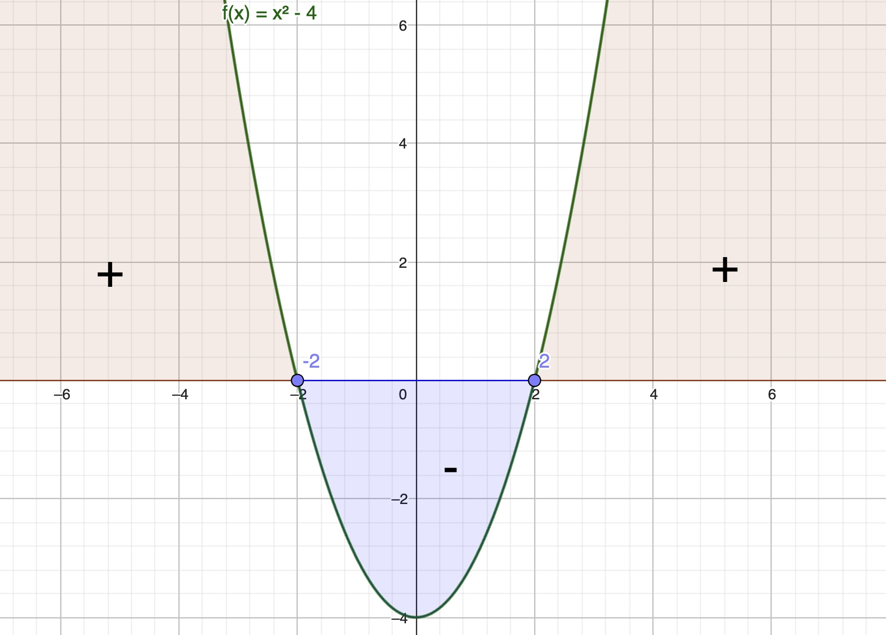
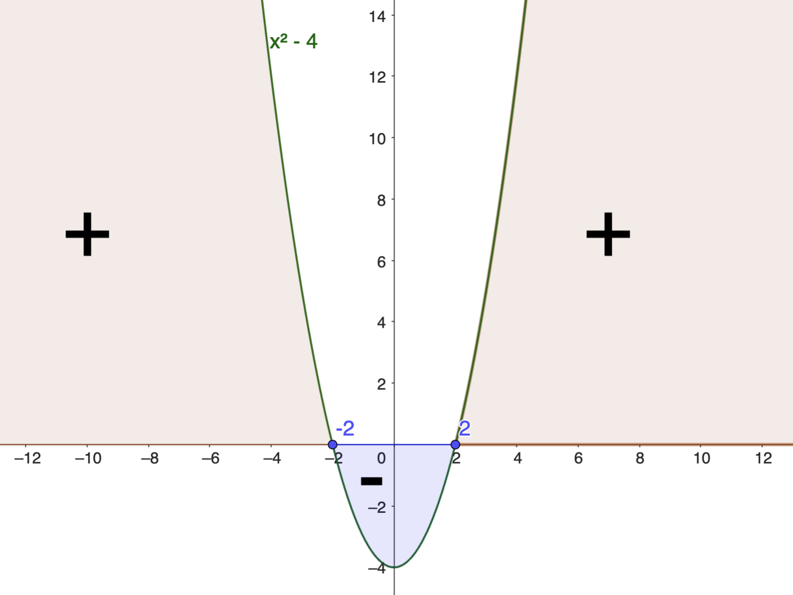
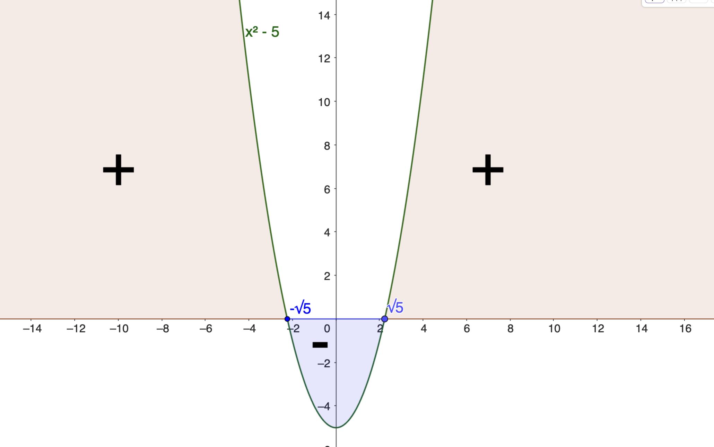
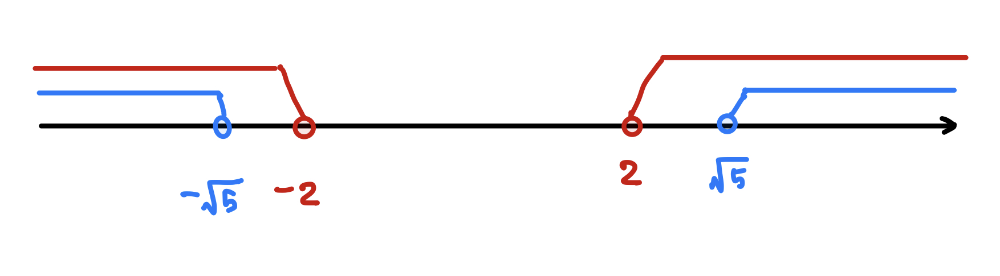
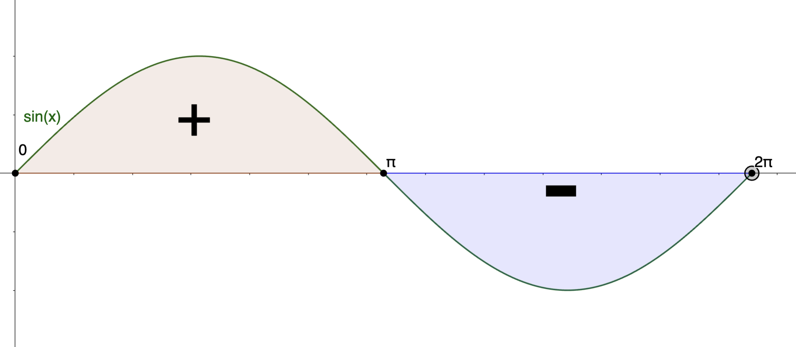

You may click here to download the PDF version.
1.1 Review
The domain of an expression is the set of all real numbers for which the expression is defined. The following restrictions must be satisfied:
- Division by zero. A denominator may not be zero.
- Even radicals. An even-indexed radical requires a nonnegative radicand.
- Logarithms. The argument of $\log_b x$ (in particular $\ln x$) must satisfy $x>0$.
The exponential function $e^x$ and the natural logarithm $\ln x$ are inverse functions. In particular,
- $e^{\ln x} = x$, for $x>0$;
- $\ln(e^x) = x$, for all real $x$.
Note that $\ln(x)$ is defined as the logarithm base \(e\), Euler’s number; that is, $\ln(x) = \log_e(x)$.
Let $a$ and $b$ be positive real numbers, and let $x,y\in\mathbb{R}$. Then
- $b^x b^y = b^{\,x+y}$
- $\dfrac{b^x}{b^y} = b^{\,x-y}$
- $(b^x)^y = b^{\,xy}$
- $(ab)^x = a^x b^x$
- $\displaystyle\left(\dfrac{a}{b}\right)^x = \dfrac{a^x}{b^x}$
For $a>0$, $A>0$, $B>0$, and $x\in\mathbb{R}$,
- $\ln(AB) = \ln A + \ln B$
- $\displaystyle \ln\!\left(\frac{A}{B}\right) = \ln A - \ln B$
- $\ln(e^x) = x$
- $\ln 1 = 0$
- $\ln(a^x) = x\ln a$
- $a^x = e^{x\ln a}$
Although most examples use natural logarithms ($\ln$), these identities hold for all logarithmic bases.
A composition function is a function where the output of one function is used as the input for another function, creating a new combined function. Here is the notation for the composition function: $$(f\circ g)(x) :=f(g(x))$$
Easy ★
-
Module 1 — Easy — 1
Determine the domain of \(f(x)=\sqrt{x-5}\) and express it in interval notation.Answer
Domain: \([5,\infty)\).
Full Solution
To find the domain of the function $f(x) = \sqrt{x-5}$, we must determine the values of $x$ for which the expression under the square root is non-negative. Thus, we need to solve the inequality: $$x - 5 \geq 0$$ Solving for $x$, we get: $$x \geq 5$$ Now, we can write the domain in interval notation: Domain of $f(x) = [5, \infty)$
-
Module 1 — Easy — 2
Determine the domain of \(\displaystyle f(x)=\frac{1}{\sqrt{x-5}}\) and express it in interval notation.Answer
Domain: \((5,\infty)\).
Full Solution
To find the domain of the function $f(x) = \frac{1}{\sqrt{x-5}}$, we must determine the values of $x$ for which the expression under the square root is non-negative and also non-zero since $\sqrt{x-5}$ is in the denominator. Thus, we need to solve the inequality: $$x - 5 > 0$$ Solving for $x$, we get: $$x > 5$$ Now, we can write the domain in interval notation: Domain of $f(x) = (5, \infty)$
-
Module 1 — Easy — 3
Determine the domain of \(f(x)=e^{-x}\) and express it in interval notation.Answer
Domain: \((-\infty,\infty)\).
Full Solution
To find the domain of\[f(x) = e^{-x},\]note that the exponential function is defined for every real input. Since \(-x\) can take any real value as \(x\) ranges over \(\mathbb{R}\), the expression \(e^{-x}\) is always defined. Thus, the domain of \(f\) is \[(-\infty, \infty).\]
-
Module 1 — Easy — 4
Determine the domain of \(f(x)=\ln(x+2)\) and express it in interval notation.Answer
Domain: \((-2,\infty)\).
Full Solution
To find the domain of the function $f(x) = \ln(x+2)$, we must determine the values of $x$ for which the expression under the $\ln()$ is non-negative and also non-zero. Thus, we need to solve the inequality: $$x + 2 > 0$$ Solving for $x$, we get: $$x > -2$$ Now, we can write the domain in interval notation: Domain of $f(x) = (-2, \infty)$
-
Module 1 — Easy — 5
Determine the domain of \(f(x)=\ln(x^2-4)\) and express it in interval notation.Answer
Domain: \((-\infty,-2)\cup(2,\infty)\).
Full Solution
To find the domain of \(f(x)=\ln(x^2-4)\), the argument of the logarithm must be positive:
\( x^2 - 4 > 0 \implies (x-2)(x+2) > 0 \implies (-\infty,-2)\text{ or }(2,\infty) \)
Therefore, the domain is: \[ (-\infty,-2)\cup(2,\infty) \]
Video solution
The video solution is available here .
-
Module 1 — Easy — 6
Determine the domain of \(\displaystyle f(x)=\frac{1}{\ln(x^2-4)}\).Answer
Domain: \((-\infty,-\sqrt 5)\cup(-\sqrt 5,-2)\cup(2,\sqrt 5)\cup(\sqrt 5,\infty)\).
Full Solution
In addition to the domain found in Module 1 — Easy — 5, we must ensure that \(\ln(x^2 - 4)\) is not zero.
Since \(\ln(t)=0\) when \(t=1\), we solve
$$ x^2 - 4 = 1 \quad\implies\quad x^2 = 5 \quad\implies\quad x = \pm\sqrt{5}. $$Thus, \(x = \pm\sqrt{5}\) must be excluded from the domain.
Combining this restriction with the domain obtained previously, we exclude \(\pm\sqrt{5}\) from \((-\infty,-2)\cup(2,\infty)\).
Therefore, the domain is:
$$ (-\infty,-\sqrt5)\; \cup\; (-\sqrt5,-2)\; \cup\; (2,\sqrt5)\; \cup\; (\sqrt5,\infty). $$ -
Module 1 — Easy — 7
Solve \(4e^{x-1}=4\).Answer
\(x=1\).
Full Solution
We solve
$$ 4e^{x-1} = 4 \;\;\Longrightarrow\;\; e^{x-1} = 1 $$Taking the natural logarithm of both sides:
$$ \ln\!\bigl(e^{x-1}\bigr) = \ln(1) $$Using \(\ln(e^u)=u\) and \(\ln(1) = 0\),
$$ x - 1 = 0 \;\;\Longrightarrow\;\; x = 1. $$ -
Module 1 — Easy — 8
Solve \(2e^{5x}-1=0\).Answer
\(x=-\dfrac{\ln 2}{5}\).
Full Solution
$$ 2e^{5x}-1=0 \Rightarrow e^{5x}=\tfrac12 \Rightarrow \ln(e^{5x})=\ln\!\left(\tfrac12\right) \Rightarrow 5x = \ln\!\left(\tfrac12\right) \Rightarrow x = \frac{\ln(\tfrac12)}{5} = -\frac{\ln(2)}{5} $$ -
Module 1 — Easy — 9
Solve \(3+2\ln\!\left(\frac{x}{7}+3\right)=-4\).Answer
\(x=7\bigl(e^{-7/2}-3\bigr)\).
Full Solution
$$ 3 + 2\ln\!\left(\frac{x}{7} + 3\right) = -4 \Rightarrow 2\ln\!\left(\frac{x}{7}+3\right) = -7 \Rightarrow \ln\!\left(\frac{x}{7}+3\right) = -\frac72 $$ $$ \Rightarrow e^{\ln\left(\frac{x}{7}+3\right)} = e^{-7/2} \Rightarrow \frac{x}{7} + 3 = e^{-7/2} \Rightarrow x = 7\left(e^{-7/2} - 3\right) $$ -
Module 1 — Easy — 10
Compute the following:- \(a^5\cdot a^7\)
- \(\dfrac{a^3}{a^2}\)
- \((3a^2)^2\)
- \(2^5\cdot 4^{-2}\)
Answer
- \(a^{12}\)
- \(a\)
- \(9a^4\)
- \(2\)
Full Solution
- \(a^{5+7} = a^{12}\)
- \(a^{3-2} = a^1 = a\)
- \((3)^2 (a^2)^2 = 9a^4\)
- \(2^5 \times (2^2)^{-2} = 2^5 \times 2^{-4} = 2^1 = 2\)
-
Module 1 — Easy — 11
Simplify each expression:- \(\ln 8+\ln 2\)
- \(\ln 54-2\ln 2+\ln 2\)
Answer
- \(\ln 16\)
- \(\ln 27\)
Full Solution
These two questions can be evaluated using logarithmic properties.
- $$ \begin{aligned} \ln(8) + \ln(2) &= \ln(8 \cdot 2) \\ &= \ln(16) \end{aligned} $$
- $$ \begin{aligned} \ln(54) - 2\ln(2) + \ln(2) &= \ln(54) - \ln(2^2) + \ln(2) \\ &= \ln\!\left(\frac{54 \cdot 2}{4}\right) \\ &= \ln(27) \end{aligned} $$
Intermediate ★★
-
Module 1 — Intermediate — 1
Determine the domain of \(f(x)=\ln(\ln(x^2-4))\) and express it in interval notation.Answer
Domain: $(-\infty, -\sqrt{5}) \cup (\sqrt{5}, \infty)$
Full Solution
To find the domain of the function \(f(x) = \ln(\ln(x^2 - 4))\), we must determine the values of \(x\) for which the composition of logarithms is defined.
First, the argument of the inner logarithm must be positive:
$$ x^2 - 4 > 0 $$Factor:
$$ (x - 2)(x + 2) > 0 $$This inequality holds when
$$ x < -2 \quad \text{or} \quad x > 2 $$Next, the argument of the outer logarithm must also be positive:
$$ \ln(x^2 - 4) > 0 $$Exponentiate both sides:
$$ e^{\ln(x^2 - 4)} > e^0 \quad\Rightarrow\quad x^2 - 4 > 1 $$Simplify:
$$ x^2 > 5 \quad\Rightarrow\quad x < -\sqrt{5} \quad \text{or} \quad x > \sqrt{5} $$Now take the intersection of \( x < -2 \text{ or } x > 2 \) and \( x < -\sqrt{5} \text{ or } x > \sqrt{5} \).
Therefore, the domain is:
$$ (-\infty, -\sqrt{5}) \;\cup\; (\sqrt{5}, \infty) $$ -
Module 1 — Intermediate — 2
Determine the domain of \(f(x)=\sqrt{154-x^2}\) and express it in interval notation.Answer
Domain: $\left[-\sqrt{154},\sqrt{154}\:\right]$
Full Solution
To determine the domain of \( f(x)=\sqrt{154-x^2}, \) the radicand must be nonnegative:
$$ 154 - x^2 \ge 0. \implies x^2 \le 154 \implies -\sqrt{154} \le x \le \sqrt{154}. $$Therefore, the domain is
$$ \left[-\sqrt{154},\,\sqrt{154}\right]. $$ -
Module 1 — Intermediate — 3
Solve \(\displaystyle \frac{A}{1+Be^{t/2}}=C\) for \(t\), where \(B,C\ne0\).Answer
$t = 2 \cdot {\ln\left(\frac{A-C}{BC} \right)}$
Full Solution
We solve the equation \[ \frac{A}{1+Be^{t/2}}=C \] for \(t\), assuming \(B\ne0\) and \(C\ne0\).
Multiply both sides by \(1+Be^{t/2}\): \[ A = C\bigl(1+Be^{t/2}\bigr). \] Thus \[ A = C + CBe^{t/2}. \] Rearranging gives \[ A - C = CBe^{t/2}. \] Hence \[ e^{t/2} = \frac{A-C}{CB}. \]
Taking the natural logarithm yields \[ \frac{t}{2} = \ln\!\left(\frac{A-C}{CB}\right). \] Therefore, \[ t = 2 \ln\!\left(\frac{A-C}{CB}\right). \]
Video solution
The video solution is available here .
-
Module 1 — Intermediate — 4
Solve \(2\ln(\sqrt{x}) - \ln(1-x) = 2\).Answer
$x = \frac{e^2}{1+e^2}$
Full Solution
Domain. The expression \(\ln(\sqrt{x})\) requires \(\sqrt{x}>0\), hence \(x>0\). The expression \(\ln(1-x)\) requires \(1-x>0\), hence \(x<1\). Thus, the equation is defined only for \[ 0 < x < 1. \]
Using \(\sqrt{x} = x^{1/2}\) and the logarithm laws, \[ 2\ln(\sqrt{x}) - \ln(1-x) = 2 \quad\Longrightarrow\quad 2\cdot \tfrac12 \ln x - \ln(1-x) = 2 \quad\Longrightarrow\quad \ln\!\left(\frac{x}{1-x}\right)=2. \]
Exponentiating both sides, \[ \frac{x}{1-x} = e^{2} \quad\Longrightarrow\quad x = e^{2}(1-x) \quad\Longrightarrow\quad x(1+e^{2}) = e^{2} \quad\Longrightarrow\quad x = \frac{e^{2}}{1+e^{2}}. \]
Finally, since \(\dfrac{e^{2}}{1+e^{2}} \in (0,1)\), it satisfies the domain.
-
Module 1 — Intermediate — 5
Find the domain of the function \(h(x)=(f\circ g)(x)\), where \[ f(x)=\sqrt{x},\qquad g(x)=\sin(x),\quad x\in[0,2\pi]. \]Answer
Domain: $[0, \pi] \cup [2\pi]$
Full Solution
We are given \[ f(x)=\sqrt{x}, \qquad g(x)=\sin(x), \quad x\in[0,2\pi], \] and we consider the composition \(h(x)=(f\circ g)(x)=\sqrt{\sin(x)}.\)
The expression \(\sqrt{\sin(x)}\) is defined precisely when \(\sin(x)\ge0\). Over the interval \([0,2\pi]\), the sine function is non-negative on \[ [0,\pi]. \]
Thus, \(h(x)\) is defined exactly for \[ x\in[0,\pi]. \]
Therefore, the domain of \(h(x)\) is \[ [0,\pi]. \]
-
Module 1 — Intermediate — 6
Solve the equation: \[ (\sqrt[3]{2})^x = 8^{10-x}. \]Answer
$x=9.$
Full Solution
We solve \[ \bigl(\sqrt[3]{2}\bigr)^x = 8^{\,10-x}. \] Rewrite both sides in base \(2\): \[ \left(2^{1/3}\right)^x = \left(2^3\right)^{10-x} \;\Longrightarrow\; 2^{x/3} = 2^{\,30-3x}. \] Taking logarithms of both sides, \[ \ln\!\left(2^{x/3}\right) = \ln\!\left(2^{30-3x}\right). \] Using \(\ln(a^b) = b\ln(a)\), \[ \frac{x}{3}\ln 2 = (30-3x)\ln 2. \] Since \(\ln 2 \neq 0\), \[ \frac{x}{3} = 30 - 3x \;\Longrightarrow\; x = 90 - 9x \;\Longrightarrow\; 10x = 90 \;\Longrightarrow\; x = 9. \]
Challenging ★★★
-
Module 1 — Challenging — 1
Let \[ f(x)=\frac{1}{x-2},\qquad g(x)=\sqrt{3x-1},\qquad h(x)=\ln(x+1). \] Find the composition \((f\circ g\circ h)(x)\) and determine its domain.Answer
\[ (f \circ g \circ h)(x) = \frac{1}{\sqrt{\,3\ln(x+1) - 1\,} - 2} \]
Domain: \[ \bigl(\sqrt[3]{e} - 1,\; e^{5/3} - 1\bigr) \;\cup\; \bigl(e^{5/3} - 1,\; \infty\bigr) \]
Full Solution
We first compute the composition \( (f \circ g \circ h)(x) \). Since \( h(x)=\ln(x+1) \), \( g(x)=\sqrt{3x-1} \), and \( f(x)=\dfrac{1}{x-2} \), we have
\[ (f \circ g \circ h)(x) = f\!\bigl(g(h(x))\bigr) = f\!\left( \sqrt{\,3\ln(x+1)-1\,} \right) = \frac{1}{\sqrt{\,3\ln(x+1)-1\,}-2}. \]
To determine the domain, each component must be defined.
First, since \(h(x)=\ln(x+1)\), we must have \[ x+1>0 \quad\Rightarrow\quad x>-1. \]
Next, the argument of \(g\bigl(h(x)\bigr)\) must be nonnegative: \[ 3\ln(x+1)-1 \ge 0 \quad\Rightarrow\quad \ln(x+1) \ge \tfrac13 \quad\Rightarrow\quad x \ge e^{1/3}-1. \]
Finally, \(f(x)=\dfrac{1}{x-2}\) is undefined when its denominator is zero; thus \[ \sqrt{\,3\ln(x+1)-1\,} \ne 2 \quad\Rightarrow\quad 3\ln(x+1)-1 \ne 4 \quad\Rightarrow\quad x \ne e^{5/3}-1. \]
Combining these conditions, we require \[ x > e^{1/3}-1, \qquad x \ne e^{5/3}-1. \]
Therefore, the domain is \[ \boxed{ \bigl(e^{1/3}-1,\;e^{5/3}-1\bigr) \;\cup\; \bigl(e^{5/3}-1,\;\infty\bigr) }. \]
Video solution
The video solution is available here .
-
Module 1 — Challenging — 2
A student attempted to solve the following equation: \[ \ln(x) + \ln(x+4) = 1. \] Their work is shown below. Identify whether the solution is correct. If incorrect, identify the error and provide the correct solution.Student’s work:
Step 1: \(\ln(x(x+4)) = 1\)
Step 2: \(e^{\ln(x(x+4))} = e^1\)
Step 3: \(x(x+4) = e\)
Step 4: \(x^2 + 4x - e = 0\)
Step 5: By quadratic formula, \[ x = \frac{-4 \pm \sqrt{16 + 4e}}{2} \]Answer
The quadratic equation obtained from the logarithmic identity is correct, but both solutions were chosen without checking the domain. Since \(\ln x\) and \(\ln(x+4)\) require \(x>0\), only \[ x=-2+\sqrt{\,4+e\,} \] satisfies the domain.
Full Solution
\[ \ln x+\ln(x+4)=1 \quad\Longrightarrow\quad \ln\!\bigl(x(x+4)\bigr)=1. \] Exponentiating, \[ x(x+4)=e \quad\Longrightarrow\quad x^2+4x-e=0. \] Thus \[ x=\frac{-4\pm\sqrt{16+4e}}{2} = -2\pm\sqrt{\,4+e\,}. \] The logarithmic expressions require \(x>0\), so \[ x>-4\quad\text{from }x+4>0, \qquad x>0\quad\text{from }x>0. \] Hence only \[ x=-2+\sqrt{\,4+e\,} \] lies in the domain. The negative part should have been omitted.